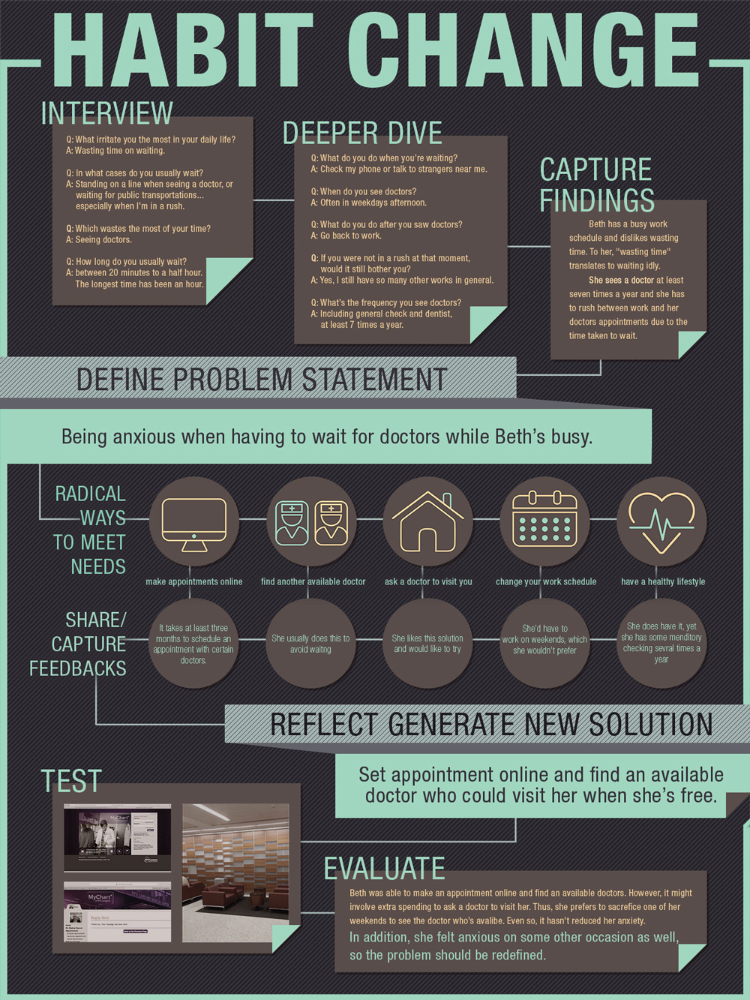
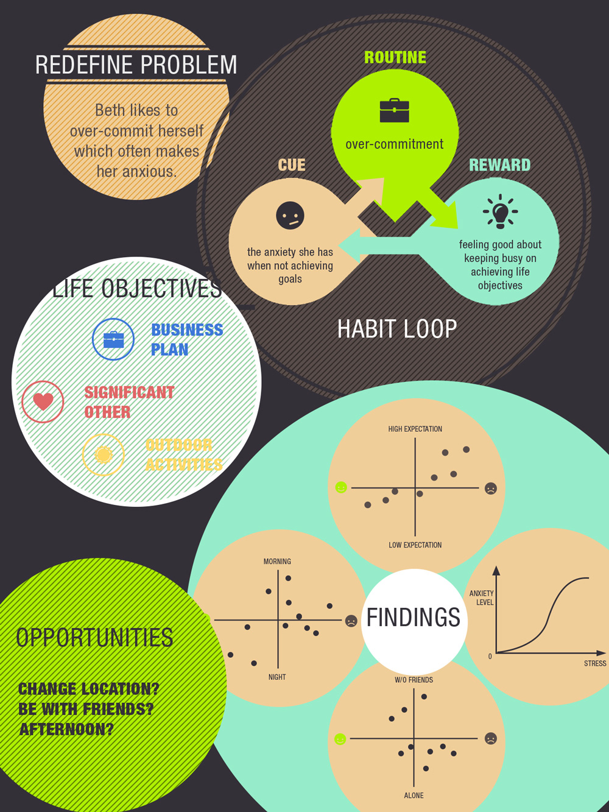

There is no magic formula that can lead to social change, but we do know that problems around us are caused by our individual and collective actions. And those actions are all triggered by something. Triggers are anything that cause us to act in a specific way, and usually have to do with: location, time, emotional state, other people, immediately preceding action.
My goal for this project is to work with a partner (Beth, in my case), help her better-understand the patterns of one of her unwanted habits by pinpointing the triggers that reinforce that habit, and design a solution that helps her overcome the habit.
Partner with a classmate to learn which habit she wants to change. After identifying the habit that my partner wants to change, look for the similarities that exist each time the habit takes place.
Along with the design solution, find/choose a way to measure how the behavior is changing.
